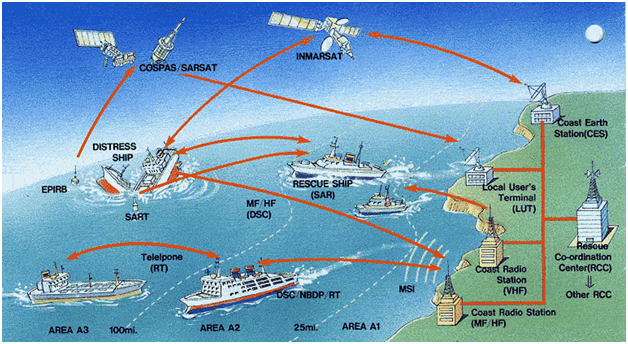

Funciones de Comunicaciones
El sistema permite simular el establecimiento de los siguientes tipos de comunicaciones:
- Comunicaciones del Servicio Móvil Marítimo en las bandas de MF/HF en los modos de telefonía, telex y Llamada Selectiva Digital.
- Comunicaciones del Servicio Móvil Marítimo en la banda de VHF en los modos de telefonía y Llamada Selectiva Digital.
- Comunicaciones vía satélite Inmarsat utilizando los estándares A, B, C y M y las radiodifusiones EGC (Enhanced Group Call). Se incluye también la simulación de envío de fax.
- Radiodifusiones Navtex.

Otras Funciones
Además de estas funciones de comunicaciones, existen otras funciones directa o indirectamente relacionadas con las mismas y que son necesarias, tanto para aumentar el realismo de la simulación como para implementar los cometidos de control y supervisión del instructor.
Entre estas funciones se puede destacar:
- Presentación cartográfica que incluye los símbolos de las estaciones participantes en el ejercicio.
- Simulación de la cinemática de las estaciones.
- Indicación horaria.
- Goniometría.
- Simulación de la detección en el radar de señales procedentes de boyas SART.
- Simulación de averías en equipos de comunicación.
Posibilidades Didácticas
Desde el punto de vista didáctico, el sistema ofrece las siguientes posibilidades de simulación:
- Iniciación de Procedimientos de Socorro.
- Iniciación a terceras partes de Procedimientos de Socorro.
- Rutinas de uso de las radiobalizas de emergencia y traspondedores radar.
- Coordinación de acciones a tomar ante situaciones de socorro.
- Rutinas de uso de la Llamada Selectiva Digital.
- Entrenamiento general en uso de las comunicaciones vía Inmarsat, estándares A, B, C y M.
- Comunicaciones télex.
- Procedimientos generales de comunicaciones, en onda corta, onda media y VHF.
Características Básicas del Simulador
En el diseño y desarrollo del Simulador se han tenido muy en cuenta los siguientes aspectos, directamente relacionados con la mejora de sus posibilidades futuras y una asistencia posventa rápida y económica.
- Capacidad de integración. El simulador GMDSS puede funcionar como sistema autónomo e independiente o como subsistema de comunicaciones del Simulador de Navegación y Pesca, de manera que en este último caso todos los puentes simulados se comunicarían entre sí o con el instructor a través del simulador GMDSS.
- Modularidad. Todos los puestos de operación del simulador poseen su propia capacidad de procesamiento local, de manera que cada uno de ellos ejecuta sus propios programas y recibe, procesa y transmite aquellos datos necesarios para lograr un funcionamiento coherente y coordinado del conjunto. Esta arquitectura facilita el mantenimiento y proporciona un gran capacidad de expansión.
- Flexibilidad. El simulador ofrece la posibilidad de elegir puestos con equipos reales o con equipos miméticos simulados por software. Por otra parte todos los puestos pueden ser configurados como puestos de instructor o de alumno.
- Sencillez de instalación. En el diseño del simulador se ha prestado particular atención a los factores determinantes de la duración, coste y sencillez de instalación, que son, principalmente el tendido de cableado y el conexionado de equipos para el que solo es necesario un cable para red local y uno de alimentación.